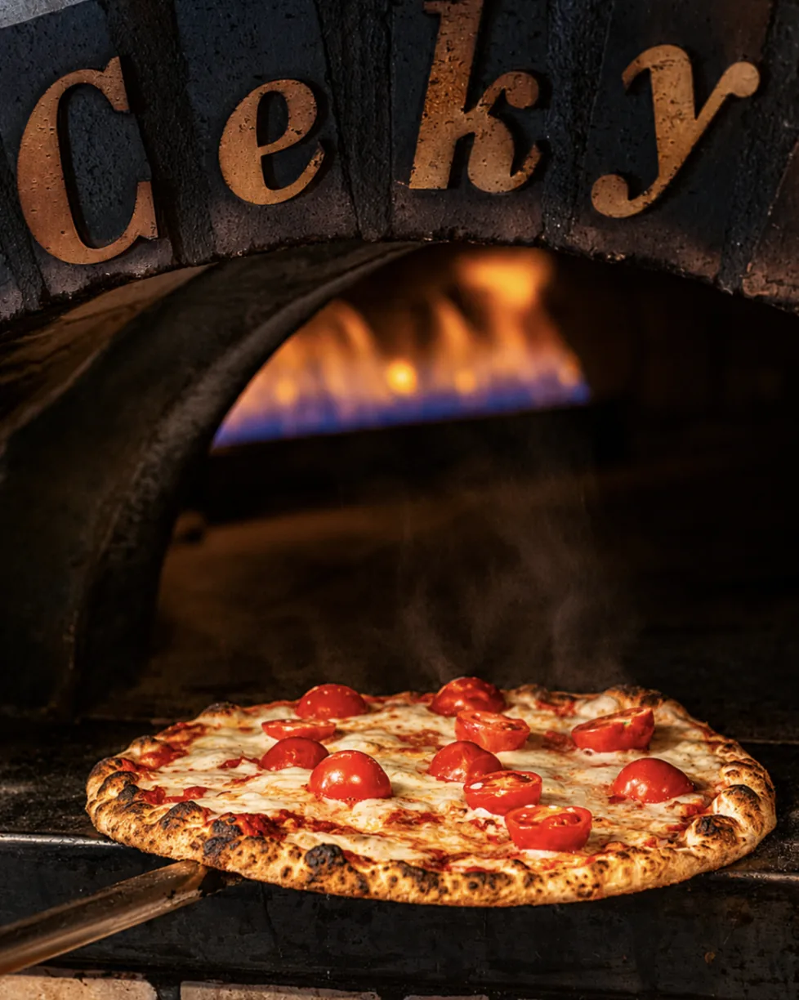
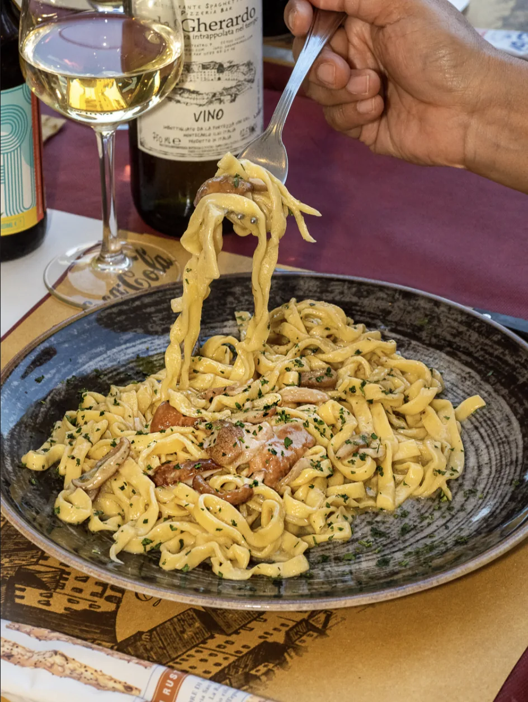
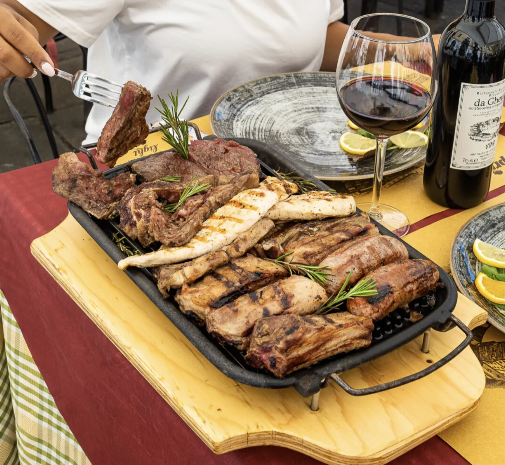
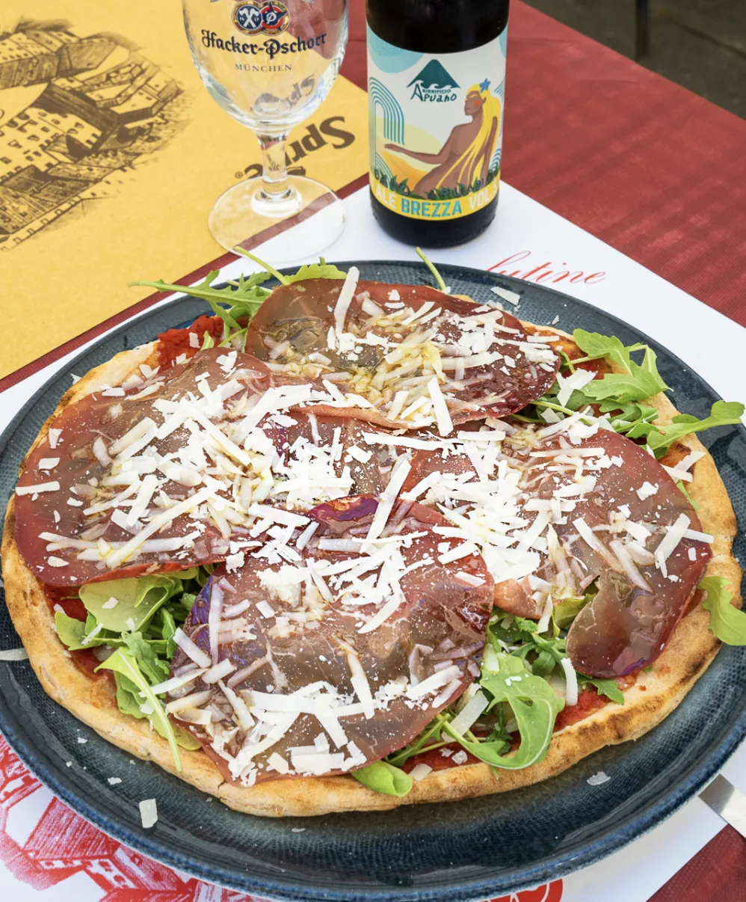
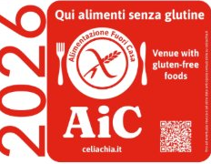
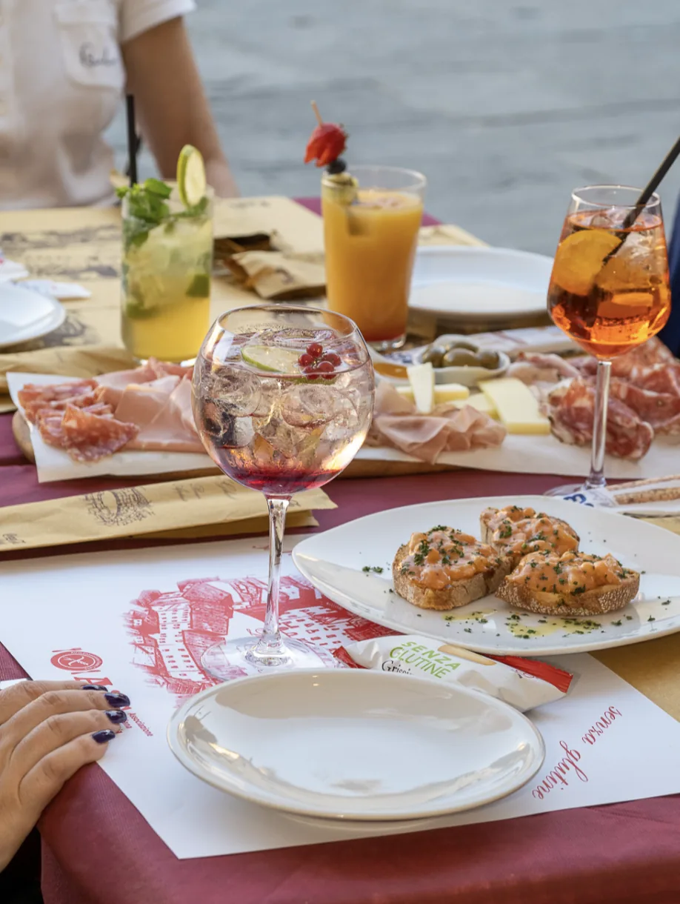

La cucina lucchese
I piatti di Lucca, in piazza
I classici crostini, i tortelli con il ragù, i pici cacio e pepe, la zuppa toscana. Di terra e di mare, e la pizza a pranzo e a cena.




Laboratorio certificato AIC
Senza glutine, fatto in casa
Nel nostro laboratorio separato prepariamo il pane, la pasta e gli impasti per la pizza. Per la soddisfazione e la sicurezza alimentare dei nostri clienti celiaci.

Aperitivo e pranzo all'aperto
All'ombra delle nostre tende
Piazza Anfiteatro è nata sulle rovine dell'anfiteatro romano del II secolo e ne conserva la forma. Da noi ci sono 100 posti in piazza e 80 all'interno.
Uno Spritz, un calice di vino, un tagliere o i nostri crostini: la mattina o nel tardo pomeriggio.
